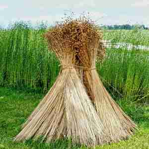
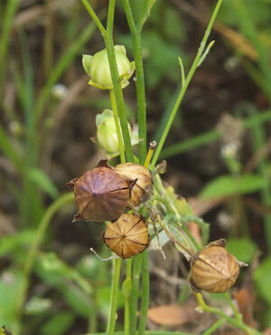
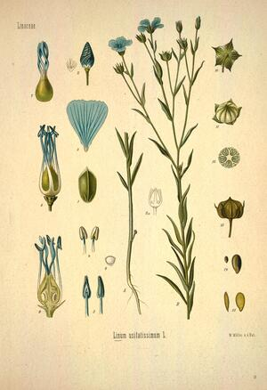
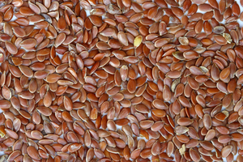

ⲙⲁϩⲉ SA, ⲙⲁϩⲓ B nn m, flax: Ex 9 31 B, Pro 31 13 S (var Mor 43 255 & B ⲉⲓⲁⲁⲩ) A λίνον, Jos 2 6 SA (Cl) λινοκαλάμη, Is 19 9 SB ⲙ. ⲛⲕⲱⲕ λ. σχιστόν (P 43 111 كتان الشنور); Is 1 31 SB, ClPr 30 16 S ⲥⲁⲁⲥⲉ, ⲙ., ϭⲗⲱ στιππίον (cf ⲗⲁⲥ); Dan 3 46 S (& cit Cai 8027, B ⲑⲏⲛ) νάφθα (in other reff to this ⲙ. omitted: Bor 264 39, P 44 115, Tri 526); P 12916 11 S dealer bought all ⲥⲓⲡⲡⲟⲛ (στιπ.) of fields sown with ⲙ., ShIF 188 S ⲟⲩⲕⲁϣ ⲙⲙ., EW 73 B ⲡⲓϫⲁϫⲓⲑⲱⲗⲡⲉ ⲡⲓⲧⲟϩ straw that comes from ⲙ., ShC 73 51 S season of ⲣ ϩⲱⲃ ⲉⲡⲙ., J 59 4 S, ST 422 S, Kr 92 S fields of ⲙ., RE 14 23 S fields ⲛⲅϫⲁⲓⲧⲟⲩ (ⲙ)ⲙ. (sic l, cf CO 304), Ann 21 74 S see to ⲡⲕⲟⲩⲓ ⲙⲙ. ⲛⲅⲧⲣⲉⲩϩⲁⲗⲉϥ, v BMOr 6201 A 72 s v ⲗⲁⲥ, BKU 1 268 S ⲡⲉⲕⲟⲩⲓ ⲙⲙ. … ⲛⲧⲉⲧⲛⲥⲟⲙⲙϥ (l ⲥⲟⲙϥ) ⲕⲁ[ⲗⲱⲥ, Bodl(P) b 9 S ⲙ. ⲉⲩⲥⲏⲙ ϩⲛⲡⲡⲩⲣⲅⲟⲥ, Kr 106 S rent for κοίτων ⲛⲧⲁⲧⲛⲉⲱⲧⲛ ⲛⲉⲙ. (ⲉ)ⲣⲟϥ (cf κοί. BM 1089), CO 453 S, ST 216 S ⲙ. ⲛⲥⲛⲟⲩϥ of last year's crop, Ep 353 S ⲙⲏⲣ ⲙⲙ., C 43 80 B martyr wound about with ϩⲁⲛⲧⲉⲃⲓ ⲛⲙ. & burnt (cf AM 319 sim ⲛⲟϩ ⲛⲥⲓⲡⲡⲉⲛ). ⲉϥⲣⲁ ⲙ. S, linseed: PMéd 114 λινόσπερμον (Chassinat), Bodl(P) 2 64 S oil of ⲉϥⲣⲉ ⲙ.; cf ⲑⲉⲣϣ. ⲣⲉϥϯ ⲙ. B, flaxseller: C 86 162 ⲟⲩⲣ. ⲛⲁⲛⲓϩⲓⲟⲙⲓ (l ⲛⲛⲓ-).
(noun male)
species
flax [λινον, λινοκαλαμη, στιππιον, ναφθα]




complete
| ⲉϥⲣⲁ ⲙ. S | linseed [λινοσπερμον]1082 | Crum: 211a | |||||||
| ⲣⲉϥϯ ⲙ. B | flaxseller1083 | ||||||||
211a
See also:
| view | ⲗⲁⲥ S ⲗⲉⲥ F | (noun male) (F once), flax, tow [στυππιον]998 |
| view | ⲉⲓⲁⲁⲩ S ⲉⲓⲱ, ⲓⲱ S ⲓⲁⲩ B | (noun male) linen [λινον, λινους]746 |
| view | ⲑⲉⲣϣ, ⲑⲏⲣϣ B | (noun male) linseed2784 |
| view | ⲃⲁⲣⲛⲉϩ F | (noun) linseed ? (ⲃⲣⲁ + ⲛⲉϩ)2728 |